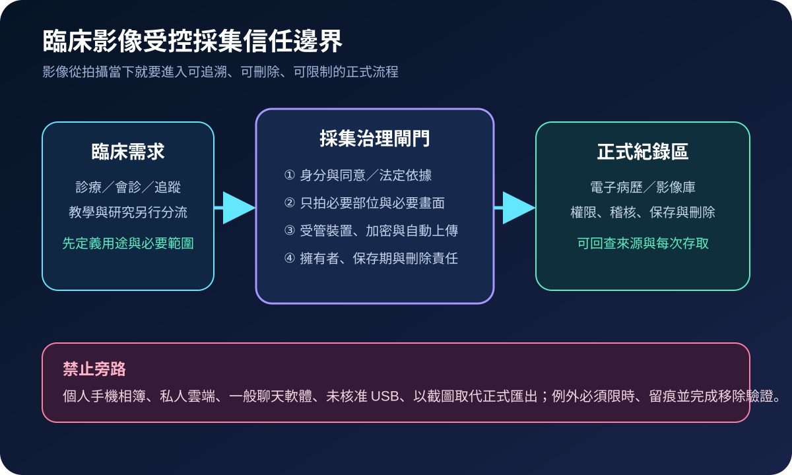
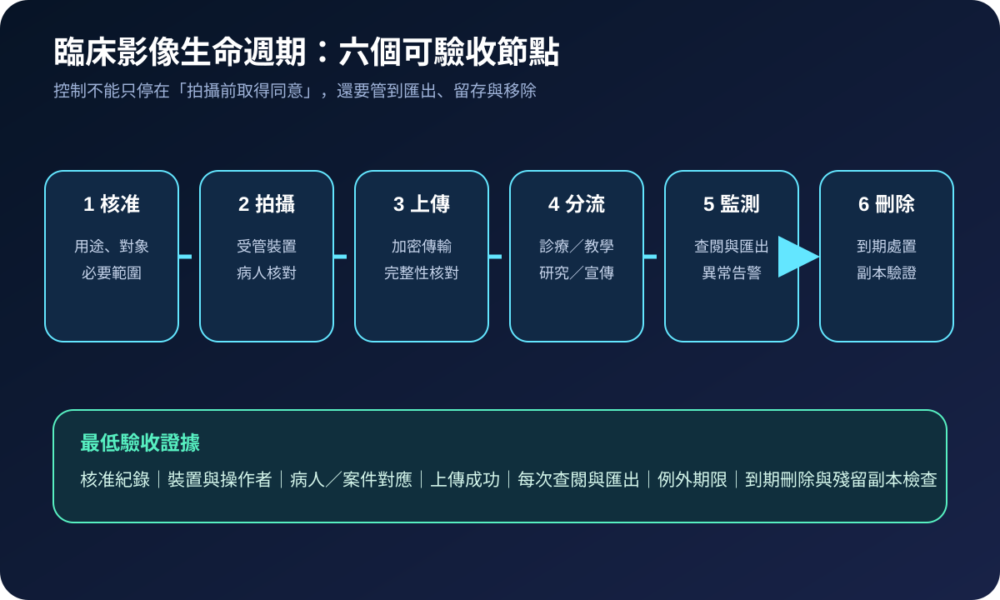
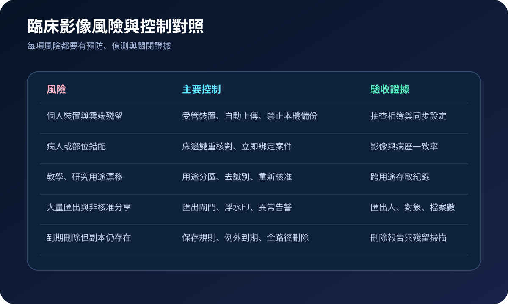

醫療資安國際觀察 · 2026-11-16
臨床攝影如何避免影像散落：從受控採集到外傳追蹤
作者：Dr. William｜醫療資訊與資安治理實務工作者
傷口、病灶、手術與會診影像具有高辨識性，也容易被複製。治理重點不是只取得拍攝同意，而是讓每張照片與影片從採集、入庫、查閱、匯出到刪除都有明確用途、責任與證據。
名詞解釋：臨床影像不只是一個檔案
臨床攝影是為診療、紀錄或會診取得照片或影片；資料最小化是只收集達成用途所需的畫面、部位與識別資料；用途分流是將診療、教學、研究、品質改善與公開傳播分開核准；生命週期治理則涵蓋裝置、上傳、存取、匯出、保存、例外與刪除。
國際現況與適用邊界
美國 HHS OCR 於 2026 年 4 月公布勒索軟體調查和解，事件涉及含病人影像在內的受保護健康資訊，並再次要求風險分析與風險管理涵蓋實際保存及處理資料的系統。NHS England 的資料安全與保護工具包指引要求組織辨識資料用途、知悉資訊位置並依保存期安全處置；NHS Scotland 於 2026 年 5 月發布的病人攝影與錄影程序，則把同意、裝置、上傳、保存及不同用途的處理列入正式程序。NIST Privacy Framework 1.1 提供資料處理盤點、治理與風險溝通的通用架構。
台灣適用原則：美國和解要求、英國與蘇格蘭公部門程序不是台灣醫療機構的直接法定義務。可將其轉成院內影像清冊、受管拍攝、用途分流、存取與刪除驗收；同意形式、病歷保存、研究倫理、個資事件判定與通報仍須依台灣法規、主管機關要求及院內程序確認。
規劃：先回答影像在哪裡、為何存在
治理範圍應涵蓋手機與相機、電子病歷、PACS 或獨立影像庫、會診平台、教學資料庫、研究環境、備份、匯出目錄與雲端同步。每一類影像需指定用途、資料擁有者、可拍攝角色、存取群組、保存期、可否匯出、例外核准人及刪除責任。驗收指標可包括：受管裝置覆蓋率、影像入庫成功率、個人裝置殘留抽查結果、跨用途存取件數、未授權匯出告警處置時間與到期刪除完成率。
實作：把影像生命週期做成閉環
- 需求核准：區分診療、會診、教學、研究、品質改善與公開使用，確認必要畫面與識別程度。
- 受控拍攝：使用受管裝置或核准應用，關閉私人雲端同步，拍攝時完成病人與部位核對。
- 正式入庫：加密上傳至病歷或核准影像庫，確認案件綁定與檔案完整，再移除暫存副本。
- 用途分流：教學與研究另行核准並降低可識別性，禁止直接把診療影像複製到個人簡報或聊天群組。
- 查閱與匯出監測：保留檢視、下載、分享、匯出與刪除紀錄，對大量匯出、非工作時段或陌生目的地告警。
- 到期處置：依保存規則與例外期限刪除，檢查備份、快取、同步資料夾與離線副本是否仍殘留。

風險：最常見的漏洞在正式系統之外
常見失敗包括使用個人手機後忘記刪除、照片自動同步私人雲端、影像綁錯病人或部位、診療用途被延伸到教學與宣傳、以截圖繞過匯出紀錄、供應商會診平台無明確保存期，以及刪除主檔但備份與聊天附件仍存在。事件處理時應先停止分享與同步，保存存取和匯出紀錄，定界受影響病人與副本位置，再依個資、臨床與法律程序分流。

可執行清單
- 是否能列出所有拍攝裝置、影像庫、會診平台、教學與研究副本？
- 拍攝前是否確認用途、病人、部位、必要畫面及適用的同意或法定依據？
- 受管裝置是否關閉私人雲端同步，並在正式入庫後移除暫存？
- 診療、教學、研究與公開使用是否分開核准、分區與授權？
- 是否記錄每次查閱、下載、分享、匯出與刪除，並偵測大量或異常行為？
- 供應商平台是否約定資料位置、次處理者、事件通知、保存期限與安全退場？
- 刪除驗收是否涵蓋備份、快取、聊天附件、同步資料夾與離線副本？
來源
- HHS OCR｜Settlement in Ransomware Investigation of South Florida Medical Practice（發布：2026-04-23；查閱：2026-11-16）
- NHS England｜CAF-aligned DSPT guidance: upholding the rights of individuals（查閱：2026-11-16）
- NHS Scotland｜Patient Photography and Video Procedures, Version 1（發布：2026-05；查閱：2026-11-16）
- NIST｜Privacy Framework 1.1（發布：2025-04-14；查閱：2026-11-16）
內容說明
本文依健康台灣深耕計畫相關治理內容整理，並參考 HHS、NHS 與 NIST 一手資料，說明臨床照片與影片的受控採集、用途分流、存取稽核、保存刪除及事件定界；不把美國和解條件或英國公部門程序視為台灣醫療機構的法定義務，也不取代主管機關規範、研究倫理審查、病歷管理、個資事件評估或法律意見。